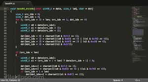

Sublime Text, içinde birçok programlama dili arayüzü barındıran, çapraz platform bir kaynak kod düzenleme ve metin editörüdür. Arayüzü Vim'den ilham alınarak tasarlanmıştır.Sublime-paketleri (Sublime-packages) yardımıyla fonksiyonelitesi genişletilebilir ancak Sublime Text açık kaynaklı ya da özgür bir yazılım değildir. Buna rağmen genişleme paketlerinin pek çoğu özgür yazılım lisansı ile dağıtılmakta ve Sublime Text kullanıcıların oluşturduğu topluluk tarafından geliştirilmektedir.
Atom JavaScript, CSS ve Node.js. ile inşa edilmiş bir masaüstü uygulaması ve temelde her şeyi özelleştirilebilir bir yapı üzerine inşa edilmiştir. Bir çok eklentisiyle bizi bizden alan kod editörü olarak gönlümüze taht kurmuş ve ileri ki dönemlerde adından sıkça bahsettirecek bir platformdur.